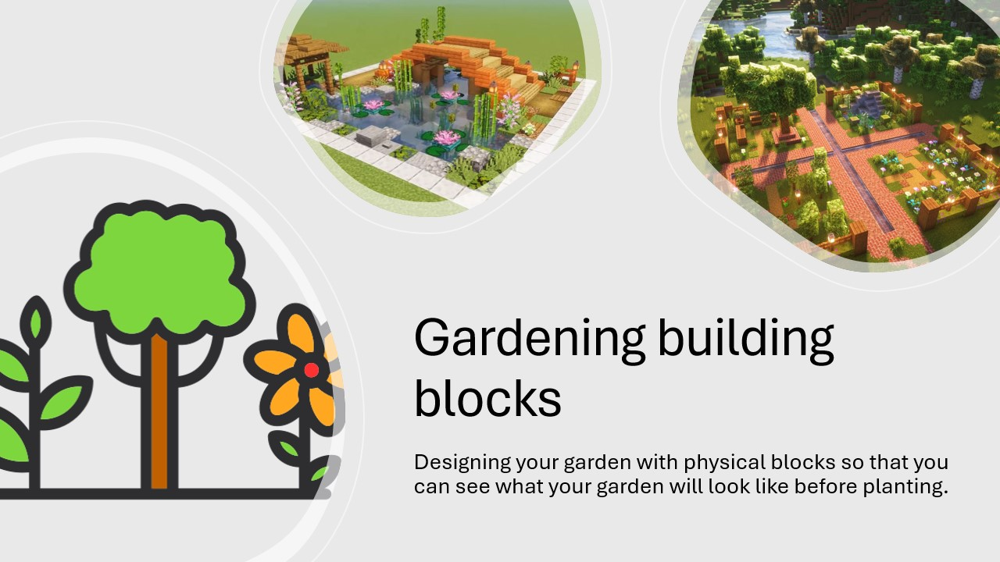

Idea 1: Gardening Building Blocks

The idea is to design your garden using physical blocks so you can see what it will look like before planting.
It focuses on elements like ground, plants, trees, flowers, elevation and water.
Framing / Problem / Goal
The problem is that it is hard to imagine how a garden will look in real life. People plan things, but they don’t really know if it works until it is already built.
The goal is to create a system where users can try different layouts and explore ideas before making decisions. The outcome is not fixed, but more about testing different possibilities.
Materials (Seed, Prompt, Toolbox)
The materials are modular blocks that represent garden elements. They act as a seed because they already suggest what you can build, but still allow many different combinations.
The blocks themselves are the toolbox, and also the prompt, because they guide the user without forcing one solution.
Scaffolding / Facilitation
Some onboarding is needed to explain what each block represents. After that, users can explore freely.
Too much guidance would limit creativity, so it should stay minimal.
Process / Space
The process is simple: build, look at it, change it.
The space should allow moving blocks easily and working together.
Idea 2: Modular RC Aircraft → Wind Tunnel
The second idea started as a modular RC aircraft where different parts like wings and fuselage can be changed.
While working on it, it became clear that this is quite complex and difficult to test.
This led to the idea of using a small wind tunnel for paper airplanes instead.
Framing / Problem / Goal
The problem is that aerodynamics is hard to understand without testing. You can design something, but you don’t really know how it behaves.
The goal is to create a playground where users can build and test airplane designs and immediately see the results.
The outcome is not one correct plane, but exploring different designs and improving them.
Technical Hurdles
The main challenge is building a wind tunnel that actually gives useful feedback. Airflow needs to be stable enough to compare designs.
Another challenge is keeping the system simple so it is still accessible.
Materials (Seed, Prompt, Toolbox)
The main material is paper, which is simple but flexible. It allows many different airplane designs.
The wind tunnel acts as the toolbox and also the prompt, because it encourages testing and improving designs.
Scaffolding / Facilitation
Some basic examples of airplane folds can help people get started.
After that, users can experiment on their own. The feedback from the wind tunnel replaces the need for instructions.
Process / Space
The process is iterative: build, test, adjust, repeat.
The space should allow easy testing and quick changes, so users can try many variations.